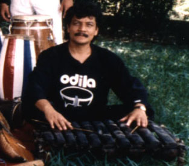

HOME FUNDEF
Israel Girón
Israel Girón

Girón Martínez, Israel Etnomusicólogo Profesor de instrumentos latinoamericanos
Nació en El Salvador en 1951, su inicio en la música parte desde 1966 como tecladista de diversos grupos de Rock, Jazz y música latina.
En 1973, egresa del Centro Nacional de Artes como profesor de pedagogía musical.
Participa como ejecutante de Viola en las agrupaciones de la Escuela de Música: Orquesta Sinfónica, Orquesta de cuerdas y cuarteto de cámara. En 1974, mediante beca otorgada por la OEA realiza curso sobre Etnomusicología y Folklore en Caracas, Venezuela. Entre 1974 y 1978 realizó investigaciones en el campo de la Etnomusicología en Centro América y Venezuela. Desde 1977 trabaja como Etnomusicólogo en instituciones especializadas en el ramo ( Instituto Interamericano de Etnomusicología y Folklore, Centro para las Culturas Populares y Tradicionales, Fundación de Etnomusicología y Folklore) Desde 1991 dicta clases de instrumentos latinoamericanos para la carrera de Etnomusicología del Instituto Universitario de Estudios Musicales (IUDEM) Como Etnomusicólogo tiene varias publicaciones escritas y ediciones discográficas sobre instrumentos musicales de América Latina y El caribe. Desde 1978 es el Representante Legal y Director de la Orquesta de Instrumentos Latinoamericanos (ODILA) con la que ha realizado giras de conciertos y talleres en Canadá, EE. UU. El Caribe y por toda la geografía Nacional.